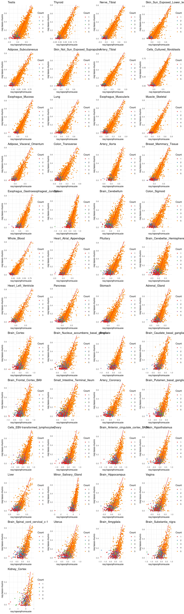

Last updated: 2025-04-04
Checks: 6 1
Knit directory: multigroup_ctwas_analysis/
This reproducible R Markdown analysis was created with workflowr (version 1.7.0). The Checks tab describes the reproducibility checks that were applied when the results were created. The Past versions tab lists the development history.
The R Markdown file has unstaged changes. To know which version of
the R Markdown file created these results, you’ll want to first commit
it to the Git repo. If you’re still working on the analysis, you can
ignore this warning. When you’re finished, you can run
wflow_publish to commit the R Markdown file and build the
HTML.
Great job! The global environment was empty. Objects defined in the global environment can affect the analysis in your R Markdown file in unknown ways. For reproduciblity it’s best to always run the code in an empty environment.
The command set.seed(20231112) was run prior to running
the code in the R Markdown file. Setting a seed ensures that any results
that rely on randomness, e.g. subsampling or permutations, are
reproducible.
Great job! Recording the operating system, R version, and package versions is critical for reproducibility.
Nice! There were no cached chunks for this analysis, so you can be confident that you successfully produced the results during this run.
Great job! Using relative paths to the files within your workflowr project makes it easier to run your code on other machines.
Great! You are using Git for version control. Tracking code development and connecting the code version to the results is critical for reproducibility.
The results in this page were generated with repository version 1d842ad. See the Past versions tab to see a history of the changes made to the R Markdown and HTML files.
Note that you need to be careful to ensure that all relevant files for
the analysis have been committed to Git prior to generating the results
(you can use wflow_publish or
wflow_git_commit). workflowr only checks the R Markdown
file, but you know if there are other scripts or data files that it
depends on. Below is the status of the Git repository when the results
were generated:
Ignored files:
Ignored: .Rhistory
Ignored: cv/
Unstaged changes:
Modified: analysis/data_weight_training_fusionscale.Rmd
Note that any generated files, e.g. HTML, png, CSS, etc., are not included in this status report because it is ok for generated content to have uncommitted changes.
These are the previous versions of the repository in which changes were
made to the R Markdown
(analysis/data_weight_training_fusionscale.Rmd) and HTML
(docs/data_weight_training_fusionscale.html) files. If
you’ve configured a remote Git repository (see
?wflow_git_remote), click on the hyperlinks in the table
below to view the files as they were in that past version.
| File | Version | Author | Date | Message |
|---|---|---|---|---|
| Rmd | 9017354 | XSun | 2025-04-03 | update |
| html | 9017354 | XSun | 2025-04-03 | update |
Normalized RNA phenotype were shared by Munro et al
Covariates are downloaded from https://pantry.pejlab.org/
Genotype are from gtex v8, we imputed the missing genotype using
beagle
We first regressed out the covariates from both the phenotype and genotype matrices. Afterward, we scaled the matrices to ensure comparability across samples.
We utilized the processed RNA phenotype and genotype data for cross-validation.
For RNA phenotype in each tissue, we partitioned the available samples into training (80%) and testing (20%) datasets.
The analysis was limited to the RNA phenotypes that are included in the Munro’s weights
For each RNA molecular, we performed the following steps:
L = 1 and L = 5 to the processed RNA phenotype
and genotype and identified the top variants from the credible
sets.We employed two methods to estimate effect sizes:
**Linear Regression:**
For the selected variants, we re-fitted a multiple linear regression model: model <- lm(rna_select_train ~ geno_snpselect_train)
effect_sizes <- coef(model)**Elastic-Net Model:**
This method was applied only to RNA phenotypes with more than one QTL:enet = cv.glmnet(
x = geno_snpselect_train,
y = rna_select_train,
alpha = 0.5,
nfolds = 10,
standardize = FALSE,
penalty.factor = (1 - snp_pip)
)
effect_sizes <- coef(enet)The estimated coefficients from this model were used as effect sizes for the selected SNPs.
Using the trained effect sizes, we predicted RNA phenotypes in the testing dataset and evaluated model performance.
We used r2 to evaluate the performance of the prediction model
r2
\[ R^2 = 1 - \frac{\sum (y_{\text{test}} - y_{\text{pred}})^2}{\sum (y_{\text{test}} - \bar{y}_{\text{test}})^2} \]
We pooled all cross-validated predictions into a single vector to get a global \(R^2\) for each RNA phenotype.
library(RSQLite)
library(ggplot2)
library(gridExtra)
library(dplyr)
library(tidyr)
name_mapping <- read.table("/project2/xinhe/shared_data/multigroup_ctwas/weights/files_Munro/Munro_name_mapping.txt")
colnames(name_mapping) <- c("Munro_name","gtex_name")qtl = "stability"
L=1
folder_pred_L1 <- paste0("/project/xinhe/xsun/weights_training/cv/multiplesets_fusionscale/",qtl,"/L",L,"/rsq_summary_fusionscale/")
folder_sample_L1<- paste0("/project/xinhe/xsun/weights_training/cv/samples/",qtl,"/")
L=5
folder_pred_L5 <- paste0("/project/xinhe/xsun/weights_training/cv/multiplesets_fusionscale/",qtl,"/L",L,"/rsq_summary_fusionscale/")
folder_sample_L5<- paste0("/project/xinhe/xsun/weights_training/cv/samples/",qtl,"/")
folder_round1 <- paste0("/project/xinhe/xsun/weights_training/cv/multiplesets_fusionscale/",qtl,"/L",L,"/round1/")sum <- c()
p <- list()
for (tissue in name_mapping$Munro_name) {
if(!file.exists(paste0(folder_pred_L1,tissue,"_rsq_fusion.RDS")) | !file.exists(paste0(folder_pred_L5,tissue,"_rsq_fusion.RDS"))) next
tissue_gtex <- name_mapping$gtex_name[which(name_mapping$Munro_name == tissue)]
## sample size
sample_test <- readRDS(paste0(folder_round1,tissue,"_samples_testing.RDS"))
sample_test <- length(sample_test)
sample_train <- readRDS(paste0(folder_round1,tissue,"_samples_training.RDS"))
sample_train <- length(sample_train)
sample_total <- sample_test + sample_train
## L=1
rsq_L1 <- readRDS(paste0(folder_pred_L1, tissue, "_rsq_fusion.RDS"))
n_withcs_L1 <- nrow(rsq_L1)
n_posrsq_L1 <- sum(rsq_L1$rsq>0,na.rm = T)
## L=5
rsq_L5 <- readRDS(paste0(folder_pred_L5, tissue, "_rsq_fusion.RDS"))
n_withcs_L5 <- nrow(rsq_L5)
n_posrsq_L5 <- sum(rsq_L5$rsq>0,na.rm = T)
n_overlap_withcs <- sum(rsq_L1$gene %in% rsq_L5$gene)
n_overlap_posrsq <- sum(rsq_L1$gene[rsq_L1$rsq > 0] %in% rsq_L1$gene[rsq_L5$rsq > 0])
## total rna & average qtl
weights <- readRDS(paste0(folder_round1, tissue, "_training_effectsizes.RDS"))
n_rna <- length(weights)
weights_nonnull <- Filter(Negate(is.null), weights)
avg_qtl <- mean(unlist(lapply(weights_nonnull,length)),na.rm = T)
tmp_tissue <- c(tissue_gtex,sample_total, n_rna, n_withcs_L1, n_withcs_L5,round(avg_qtl,digits = 4), n_overlap_withcs, n_posrsq_L1, n_posrsq_L5, n_overlap_posrsq)
sum <- rbind(sum, tmp_tissue)
rsq_L1_df <- data.frame(id = rsq_L1$gene, rsq_L1 = rsq_L1$rsq, count_L1 = rsq_L1$count)
rsq_L5_df <- data.frame(id = rsq_L5$gene, rsq_L5 = rsq_L5$rsq, count_L5 = rsq_L5$count)
rsq_merge <- merge(rsq_L1_df, rsq_L5_df , by = "id")
p[[tissue_gtex]] <- ggplot(rsq_merge, aes(x=rsq_L1, y=rsq_L5, color=factor(count_L5))) +
geom_point(size =1) +
labs(x = "rsq-L1", y="rsq-L5", color = "Count_L5") +
geom_abline(slope = 1, intercept = 0, col="red") +
ggtitle(tissue_gtex) +
scale_color_brewer(palette = "Set1") +
theme_minimal()
}
sum <- as.data.frame(sum)
rownames(sum) <- NULL
colnames(sum) <- c("tissue","sample_size_total", "n_rna_total", "n_rna_withcs_L1", "n_rna_withcs_L5", "avg_qtl_L5", "n_overlap_withcs", "n_rna_rsq+_L1", "n_rna_rsq+_L5", "n_overlap_rsq+")
sum <- sum[order(as.numeric(sum$sample_size_total),decreasing = T),]
grid.arrange(grobs = p, ncol = 4)
| Version | Author | Date |
|---|---|---|
| 9017354 | XSun | 2025-04-03 |
DT::datatable(sum,caption = htmltools::tags$caption( style = 'caption-side: left; text-align: left; color:black; font-size:150% ;','Comparing L=1 & L=5'),options = list(pageLength = 10) )qtl = "stability"
L=1folder_pred <- paste0("/project/xinhe/xsun/weights_training/cv/multiplesets_fusionscale/",qtl,"/L",L,"/rsq_summary_fusionscale/")
folder_round1<- paste0("/project/xinhe/xsun/weights_training/cv/multiplesets_fusionscale/",qtl,"/L",L,"/round1/")
sum <- c()
for (tissue in name_mapping$Munro_name) {
if(!file.exists(paste0(folder_pred,tissue,"_rsq_fusion.RDS"))) next
tissue_gtex <- name_mapping$gtex_name[which(name_mapping$Munro_name == tissue)]
### our weights
file_rna_pheno <- paste0("/project/xinhe/xsun/weights_training/data/rna_pheno_norm/",tissue,".",qtl,".norm.bed.gz")
n_rna <- as.integer(system(sprintf("zcat %s | wc -l", file_rna_pheno), intern = TRUE)) - 1
weights <- readRDS(paste0(folder_round1, tissue, "_training_effectsizes.RDS"))
rsq <- readRDS(paste0(folder_pred, tissue, "_rsq_fusion.RDS"))
n_withcs <- nrow(rsq)
n_posrsq <- sum(rsq$rsq>0,na.rm = T)
### sample size
sample_test <- readRDS(paste0(folder_round1,tissue,"_samples_testing.RDS"))
sample_test <- length(sample_test)
sample_train <- readRDS(paste0(folder_round1,tissue,"_samples_training.RDS"))
sample_train <- length(sample_train)
sample_total <- sample_test + sample_train
### Munro's weights
df_munro <- read.table(paste0("/project/xinhe/xsun/weights_training/data/weights_munro/",qtl,"/",tissue,".",qtl,".twas_weights.profile"), header = T)
n_rna_withweights_munro <- nrow(df_munro)
### overlap
n_overlap_withcs <- sum(rsq$gene %in% df_munro$id)
n_overlap_posrsq <- sum(rsq$gene[rsq$rsq>0] %in% df_munro$id,na.rm=T)
tmp_tissue <- c(tissue_gtex,sample_total,n_rna,n_rna_withweights_munro, n_withcs,n_overlap_withcs,n_posrsq,n_overlap_posrsq)
sum <- rbind(sum, tmp_tissue)
}
sum <- as.data.frame(sum)
rownames(sum) <- NULL
colnames(sum) <- c("tissue","sample_size_total","n_rna_total","n_munro_weights","n_rna_withsusie_cs","overlap_cs_munro","n_rna_rsq+","overlap_rsq+_munro")
sum <- sum[order(as.numeric(sum$sample_size_total),decreasing = T),]
DT::datatable(sum,caption = htmltools::tags$caption( style = 'caption-side: left; text-align: left; color:black; font-size:150% ;','Summary for the prediction models'),options = list(pageLength = 10) )folder_munroweights<- paste0("/project/xinhe/xsun/weights_training/data/weights_munro/",qtl,"/")
p <- list()
p2 <- list()
for (tissue in name_mapping$Munro_name) {
if(!file.exists(paste0(folder_pred,tissue,"_rsq_fusion.RDS"))) next
tissue_gtex <- name_mapping$gtex_name[which(name_mapping$Munro_name == tissue)]
### our weights
rsq <- readRDS(paste0(folder_pred, tissue, "_rsq_fusion.RDS"))
rsq <- data.frame(id = rsq$gene, rsq = rsq$rsq, count=rsq$count)
### Munro's weights
summary_munro <- read.table(paste0(folder_munroweights,tissue,".",qtl,".twas_weights.profile"),header = T)
merged_df <- merge(rsq, summary_munro, by= "id")
merged_df <- merged_df %>%
filter(!is.na(rsq) & !is.na(lasso.r2) & !is.na(count) & is.finite(rsq) & is.finite(lasso.r2))
p[[tissue_gtex]] <- ggplot(merged_df, aes(x=rsq, y=lasso.r2, color=factor(count))) +
geom_point(size =1) +
labs(x = "rsq-topsnpfromsusie", y="rsq-lasso-munro", color ="Count") +
geom_abline(slope = 1, intercept = 0, col="red") +
ggtitle(tissue_gtex) +
scale_color_brewer(palette = "Set1") +
theme_minimal()
df <- merged_df %>% pivot_longer(cols = c("rsq","lasso.r2"), names_to = "variable", values_to = "value") %>%
mutate(variable = recode(variable,
rsq = "rsq_susie",
lasso.r2 = "rsq_lasso_munro"))
p2[[tissue_gtex]] <- ggplot(df, aes(x=variable, y=value)) +
geom_boxplot() +
labs(x="", y ="rsq", title = tissue_gtex) +
theme_minimal()
}
grid.arrange(grobs = p, ncol = 4)
| Version | Author | Date |
|---|---|---|
| 9017354 | XSun | 2025-04-03 |
grid.arrange(grobs = p2, ncol = 4)qtl = "stability"
L=5folder_pred <- paste0("/project/xinhe/xsun/weights_training/cv/multiplesets_fusionscale/",qtl,"/L",L,"/rsq_summary_fusionscale/")
folder_round1<- paste0("/project/xinhe/xsun/weights_training/cv/multiplesets_fusionscale/",qtl,"/L",L,"/round1/")
sum <- c()
for (tissue in name_mapping$Munro_name) {
if(!file.exists(paste0(folder_pred,tissue,"_rsq_fusion.RDS"))) next
tissue_gtex <- name_mapping$gtex_name[which(name_mapping$Munro_name == tissue)]
### our weights
file_rna_pheno <- paste0("/project/xinhe/xsun/weights_training/data/rna_pheno_norm/",tissue,".",qtl,".norm.bed.gz")
n_rna <- as.integer(system(sprintf("zcat %s | wc -l", file_rna_pheno), intern = TRUE)) - 1
weights <- readRDS(paste0(folder_round1, tissue, "_training_effectsizes.RDS"))
rsq <- readRDS(paste0(folder_pred, tissue, "_rsq_fusion.RDS"))
n_withcs <- nrow(rsq)
n_posrsq <- sum(rsq$rsq>0,na.rm = T)
### sample size
sample_test <- readRDS(paste0(folder_round1,tissue,"_samples_testing.RDS"))
sample_test <- length(sample_test)
sample_train <- readRDS(paste0(folder_round1,tissue,"_samples_training.RDS"))
sample_train <- length(sample_train)
sample_total <- sample_test + sample_train
### Munro's weights
df_munro <- read.table(paste0("/project/xinhe/xsun/weights_training/data/weights_munro/",qtl,"/",tissue,".",qtl,".twas_weights.profile"), header = T)
n_rna_withweights_munro <- nrow(df_munro)
### overlap
n_overlap_withcs <- sum(rsq$gene %in% df_munro$id)
n_overlap_posrsq <- sum(rsq$gene[rsq$rsq>0] %in% df_munro$id,na.rm=T)
tmp_tissue <- c(tissue_gtex,sample_total,n_rna,n_rna_withweights_munro, n_withcs,n_overlap_withcs,n_posrsq,n_overlap_posrsq)
sum <- rbind(sum, tmp_tissue)
}
sum <- as.data.frame(sum)
rownames(sum) <- NULL
colnames(sum) <- c("tissue","sample_size_total","n_rna_total","n_munro_weights","n_rna_withsusie_cs","overlap_cs_munro","n_rna_rsq+","overlap_rsq+_munro")
sum <- sum[order(as.numeric(sum$sample_size_total),decreasing = T),]
DT::datatable(sum,caption = htmltools::tags$caption( style = 'caption-side: left; text-align: left; color:black; font-size:150% ;','Summary for the prediction models'),options = list(pageLength = 10) )folder_munroweights<- paste0("/project/xinhe/xsun/weights_training/data/weights_munro/",qtl,"/")
p <- list()
p2 <- list()
for (tissue in name_mapping$Munro_name) {
if(!file.exists(paste0(folder_pred,tissue,"_rsq_fusion.RDS"))) next
tissue_gtex <- name_mapping$gtex_name[which(name_mapping$Munro_name == tissue)]
### our weights
rsq <- readRDS(paste0(folder_pred, tissue, "_rsq_fusion.RDS"))
rsq <- data.frame(id = rsq$gene, rsq = rsq$rsq, count=rsq$count)
### Munro's weights
summary_munro <- read.table(paste0(folder_munroweights,tissue,".",qtl,".twas_weights.profile"),header = T)
merged_df <- merge(rsq, summary_munro, by= "id")
merged_df <- merged_df %>%
filter(!is.na(rsq) & !is.na(lasso.r2) & !is.na(count) & is.finite(rsq) & is.finite(lasso.r2))
p[[tissue_gtex]] <- ggplot(merged_df, aes(x=rsq, y=lasso.r2, color=factor(count))) +
geom_point(size =1) +
labs(x = "rsq-topsnpfromsusie", y="rsq-lasso-munro", color ="Count") +
geom_abline(slope = 1, intercept = 0, col="red") +
ggtitle(tissue_gtex) +
scale_color_brewer(palette = "Set1") +
theme_minimal()
df <- merged_df %>% pivot_longer(cols = c("rsq","lasso.r2"), names_to = "variable", values_to = "value") %>%
mutate(variable = recode(variable,
rsq = "rsq_susie",
lasso.r2 = "rsq_lasso_munro"))
p2[[tissue_gtex]] <- ggplot(df, aes(x=variable, y=value)) +
geom_boxplot() +
labs(x="", y ="rsq", title = tissue_gtex) +
theme_minimal()
}
grid.arrange(grobs = p, ncol = 4)
| Version | Author | Date |
|---|---|---|
| 9017354 | XSun | 2025-04-03 |
grid.arrange(grobs = p2, ncol = 4)qtl <- "stability"
L <- 5
folder_pred <- paste0("/project/xinhe/xsun/weights_training/cv/multiplesets_fusionscale/",qtl,"/L",L,"/rsq_summary_fusionscale/")
p <- list()
for (tissue in name_mapping$Munro_name) {
if(!file.exists(paste0(folder_pred,tissue,"_rsq_fusion.RDS"))) next
tissue_gtex <- name_mapping$gtex_name[which(name_mapping$Munro_name == tissue)]
### linear
rsq_linear <- readRDS(paste0(folder_pred, tissue, "_rsq_fusion.RDS"))
### enet
rsq_enet <- readRDS(paste0(folder_pred, tissue, "_rsq_fusion_enetrefit.RDS"))
rsq_merge <- merge(rsq_linear, rsq_enet, by = "gene")
colnames(rsq_merge) <- c("gene", "rsq_linear","count","rsq_enet")
rsq_merge <- rsq_merge[,-ncol(rsq_merge)]
rsq_merge_diff <- rsq_merge[rsq_merge$rsq_linear != rsq_merge$rsq_enet,]
p[[tissue_gtex]] <- ggplot(rsq_merge_diff, aes(x=rsq_linear, y=rsq_enet, color=factor(count))) +
geom_point(size=1) +
labs(x = "rsq-linear", y = "rsq-ENET", color = "Count") +
geom_abline(slope = 1, intercept = 0, col="red") +
ggtitle(tissue_gtex) +
scale_color_brewer(palette = "Set1") + # Try "Set2" or "Dark2" for different looks
theme_minimal()
}
grid.arrange(grobs = p, ncol = 4)
| Version | Author | Date |
|---|---|---|
| 9017354 | XSun | 2025-04-03 |
sessionInfo()R version 4.2.0 (2022-04-22)
Platform: x86_64-pc-linux-gnu (64-bit)
Running under: CentOS Linux 7 (Core)
Matrix products: default
BLAS/LAPACK: /software/openblas-0.3.13-el7-x86_64/lib/libopenblas_haswellp-r0.3.13.so
locale:
[1] C
attached base packages:
[1] stats graphics grDevices utils datasets methods base
other attached packages:
[1] tidyr_1.3.0 dplyr_1.1.4 gridExtra_2.3 ggplot2_3.5.1 RSQLite_2.3.1
loaded via a namespace (and not attached):
[1] tidyselect_1.2.0 xfun_0.41 bslib_0.3.1 purrr_1.0.2
[5] colorspace_2.0-3 vctrs_0.6.5 generics_0.1.2 htmltools_0.5.2
[9] yaml_2.3.5 utf8_1.2.2 blob_1.2.3 rlang_1.1.2
[13] jquerylib_0.1.4 later_1.3.0 pillar_1.9.0 glue_1.6.2
[17] withr_2.5.0 DBI_1.2.2 bit64_4.0.5 RColorBrewer_1.1-3
[21] lifecycle_1.0.4 stringr_1.5.1 munsell_0.5.0 gtable_0.3.0
[25] workflowr_1.7.0 htmlwidgets_1.5.4 evaluate_0.15 memoise_2.0.1
[29] labeling_0.4.2 knitr_1.39 fastmap_1.1.0 crosstalk_1.2.0
[33] httpuv_1.6.5 fansi_1.0.3 highr_0.9 Rcpp_1.0.12
[37] DT_0.22 promises_1.2.0.1 scales_1.3.0 cachem_1.0.6
[41] jsonlite_1.8.0 farver_2.1.0 fs_1.5.2 bit_4.0.4
[45] digest_0.6.29 stringi_1.7.6 rprojroot_2.0.3 grid_4.2.0
[49] cli_3.6.1 tools_4.2.0 magrittr_2.0.3 sass_0.4.1
[53] tibble_3.2.1 whisker_0.4 pkgconfig_2.0.3 rmarkdown_2.25
[57] rstudioapi_0.13 R6_2.5.1 git2r_0.30.1 compiler_4.2.0